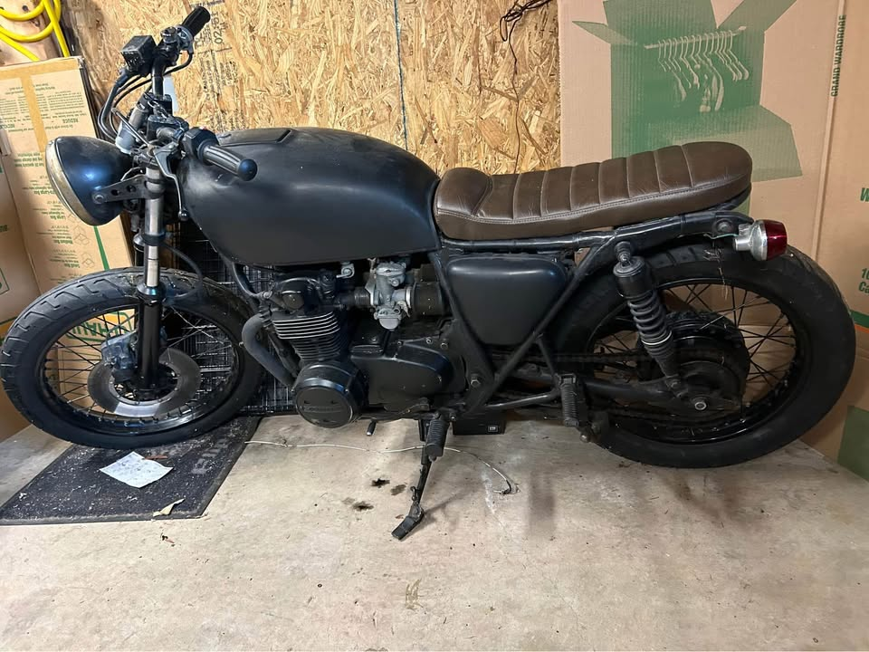
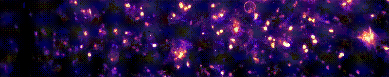
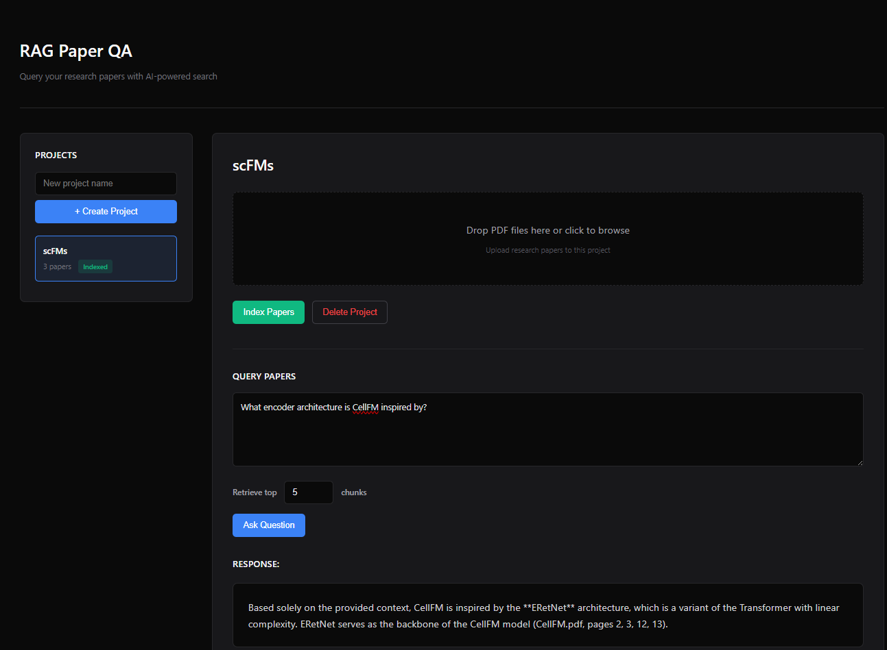

Cafe Racer
Ongoing project resotring a 1978 Honda CB550 Cafe Racer (sorry mom).
BrainFM
Transformer-based foundation model to predict perturbations from real multi-neuron electrophysiological recordings.
OncoRx
Machine learning model predicting cell line responses to oncological treatment based on gene expression data.

Motorized Couch
220cc Couch

ETFM
Transformer-based model predicting ETF daily returns by learning constituent stock interactions, inspired by single-cell foundation models.

Research RAG
RAG workflow that indexes research papers and answers questions with specific supporting citations, along with a Flask server and HTML chat interface.
Mass Spec Normalization
Machine learning model to normalize spectra and allow comparison across different collision energies.

Betbot
Machine learning model to predict the outcome of NBA games.